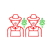

Contact Us
For any inquiries or assistance, feel free to reach out to us.
Email: kisanmitra@gmail.com
Phone: 0261 253xxx
Address: Gujrat Low Soc, Near Low Garden
Ahmedabad, Gujrat
Farmer Producer Organizations (FPOs)
Introduction to Our Farmer Producer Organizations (FPOs) :
KisanMitra's commitment to empowering farmers extends to our partnership with Farmer Producer Organizations (FPOs) through our Farmer-2-Farmer (F2F) digital platform. By facilitating direct interactions between farmers and FPOs, we enable farmers to access a diverse range of farm inputs and services directly from these organizations. Through our platform, farmers can connect with the CEOs of listed FPOs, exploring opportunities to procure high-quality products while also gaining insights into market trends and demand.
Furthermore, our collaboration with FPOs offers farmers the chance to market and sell their produce efficiently and profitably. With access to a network of over 400 FPOs, farmers can expand their market reach and negotiate fair prices for their agricultural products. KisanMitra's dedication to supporting farmers' success is evident in our commitment to providing convenient, reliable, and innovative solutions through our FPO partnerships. Join us in revolutionizing the agricultural landscape and empowering farmers for a sustainable future.
Benefits to Farmers
- Direct access to FPOs and their CEOs
- Choice of a wide variety of quality farm inputs from registered FPOs
- Sell farm produce to 400+ FPOs

Easy and quick access to the JFarm Services’ Farmer-2-Farmer platform- Benefit from the expertise and support of JFarm Services
- Convenient and reliable
Benefits to Farmer Producer Organizations
- Direct connect with farmers
- Sell high-quality farm inputs like seeds, fertilizers etc. directly to farmers
 Maximize earning potential and empower farmers by buying their farm produce
Maximize earning potential and empower farmers by buying their farm produce- Improve quality of services based on feedback from the JFarm Services platform
- Benefit from the expertise and support of JFarm Services
- Convenient and reliable